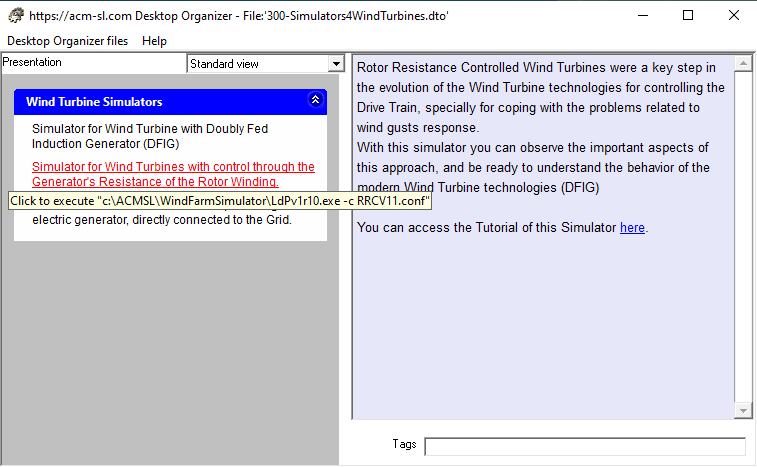
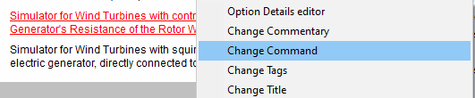
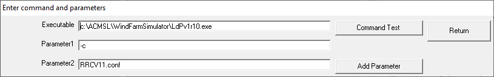

Option with Command type application with parameters.
The Command of an Option may be an application (reference to an "*.exe" or "*.com" or "*.bat" file). The invocation of an executable may require parameters. Furthermore, these parameters can refer to files on disk, and the location of these files may contain blanks. For instance:
"C: \ Program Files (x86) \ Notepad ++ \ notepad ++. Exe C: \ T mp \ test.xml".
The treatment of blanks presents problems, since the command processor (parser) uses the blanks to distinguish between the application location itself and the different components of the command, which implies that, in the previous command, the parser will find 4 objects:
- "C:\Program Files"
- "(x86)\Notepad++\notepad++.exe"
- "C:\T"
- "mp\test.xml"
when what we really want is to find only two:
- "C:\Program Files (x86)\Notepad++\notepad++.exe"
- "C:\T mp\test.xml".
The way to solve this problem is to include each problematic parameter in double quotation marks ("): the previous command should be written as:
"C:\Program Files (x86)\Notepad++\notepad++.exe" "C:\T mp\text.xml"
To facilitate this task, the Desktop Organizer has a specific form that is presented when selecting the Change Command in the Option menu. Next figures show an example.

The tooltip of the selected option (in red) shows that the Command specifies an executable ("c:\ACMSL\WindFarmSimulator\LdPv1r10.exe", and two parameters: "-c" and "RRCV11.conf". To edit its content we use the "Change Command" option of the Option menu, as shown in next figure.

that will present the following form, filled in with the existing values for the parameters:

Pressing the Add Parameter button creates an additional "Parameter x" text box where you can enter the actual value of the parameter: this text may contain blanks but not the double quote character (").
Parameters that are blank are not taken into consideration.
The Command Test button permits to check that the entered values for the parameters do perform the desired execution.
Executing applications with parameters